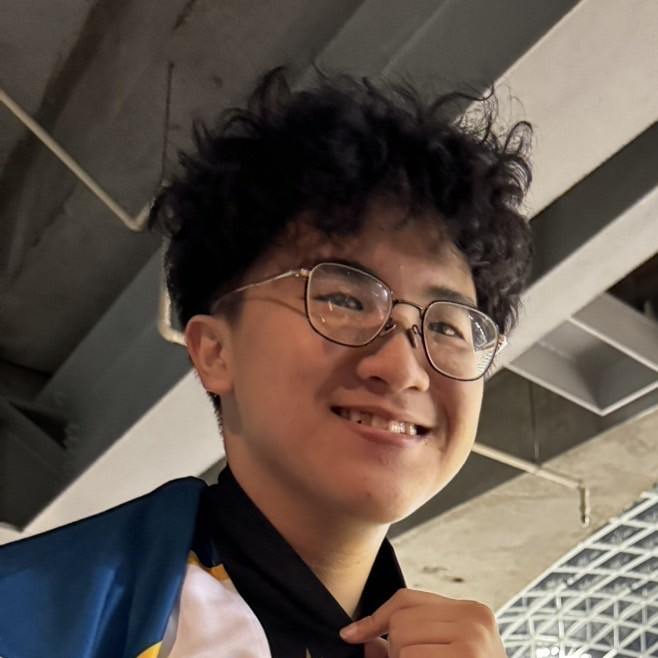

數學/math
程式設計/programing
英文/english
目前就讀於中原大學 智慧運算與大數據學士班
Chung Yuan Christian University Program in Intellgent Computing and Big Data
Chung Yuan Christian University Program in Intellgent Computing and Big Data